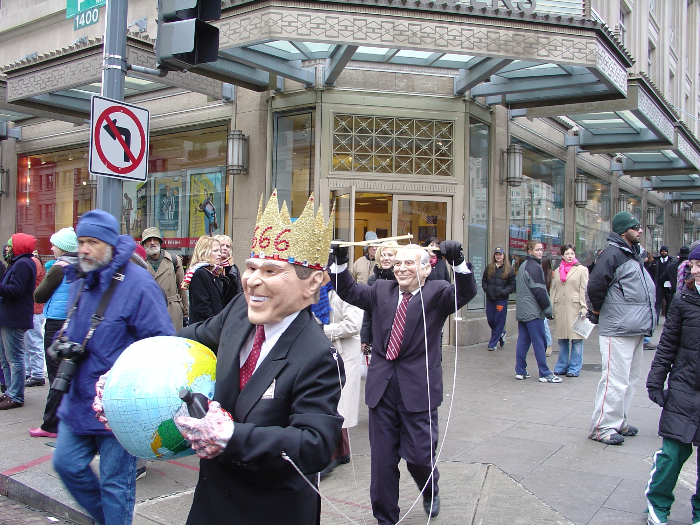
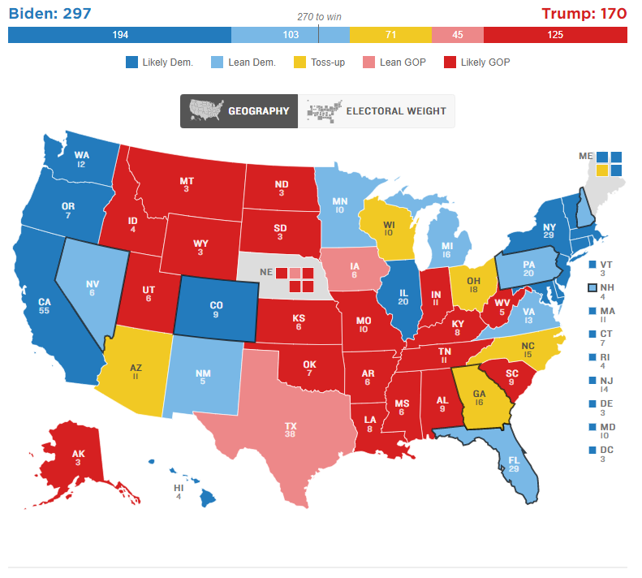
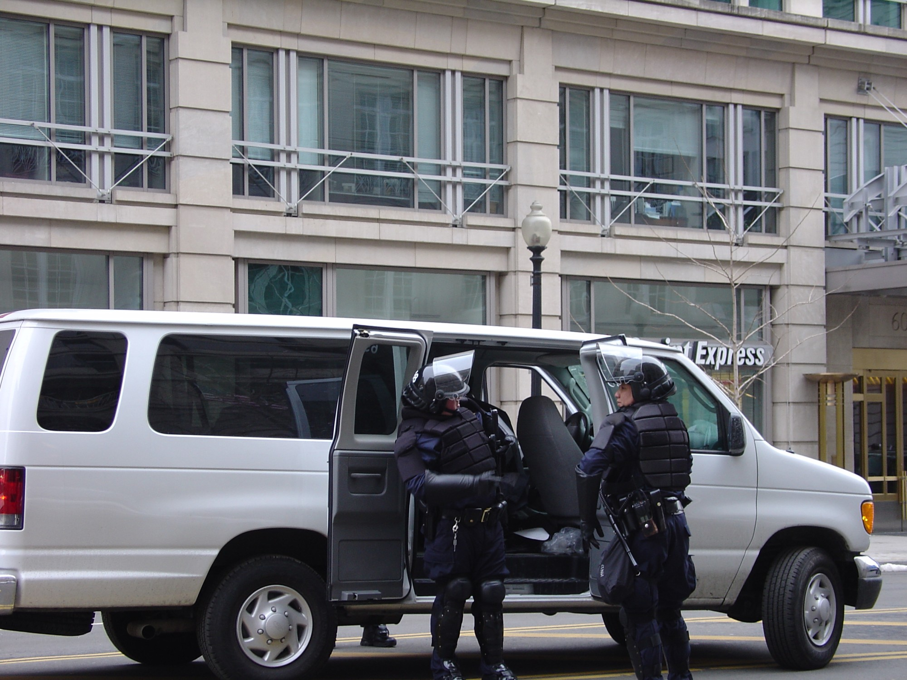

My dotcom and World Trade Center Story
By March of 2001, it was quite clear that the dotcom bubble was bursting. I remember teaching an Interwoven Boot Camp for someone from https://en.wikipedia.org/wiki/MarchFirst on the first of March in 2001. By the middle of April, March First was bankrupt. My employer at the time had also gone bankrupt, but I had committed to teaching the class, so I completed it. I do not remember whether I got paid for that work. I remember that I never received my 15,000 worthless shares of stock from that company and that they had failed to fund retirement accounts. People showed up to the office one day and the doors were chained shut. I was working in a separate facility for training, so I was at least able to keep my laptop.
I had just been married and I needed some stability. I considered going to Singapore then to work for Interwoven, but they lowballed me (if you understand working hours and housing costs for expatriates in Singapore, you do not take a lowball). I took some interviews with financial companies: U.S. Bank in Oregon, Fannie Mae in Washington DC, and Lehman Brothers in New York. These are probably the only times that I wore a suit for work. I remember someone at Fannie Mae telling me that each employee corresponded to approximately $1.5M in profit (not revenue) per year. I guess I should have known that something was wrong there too. At the time, anything approaching six figures seemed like an outrageous salary.
Interwoven skills were in demand, and I was one of the rare few who even knew what this technology was. Lehman flew me to New York first class and put me up in a hotel near their office in WTC1 (World Trade Center Building 1).
The twin towers were like cities within the city; they had their own postal code(s). If I remember correctly, there was a train station at the bottom of the building. The temporary IDs were of higher quality than some permanent IDs I've had. If you stood with your back to an exterior corner and looked up, you would experience something like vertigo.
My interview on the fortieth floor went fine, mostly because the interviewers did not know what to ask, but I was young and cocky. Though I love the place, I certainly did not want to live or even work in New York City every day, especially if I could not have an office with a window. As it turned out a few months later, I was probably quite lucky that things did not work out there. And a few years after that, when Lehman collapsed in debt, I was even more glad that I had not taken that job.
Back then, airlines could fly in over the city. It must have been on that trip that the pilot tipped the plane to one side so that the passengers could look down into the canyons between the buildings in Manhattan. At night, it was an amazing view. Times Square was about the brightest thing I had ever seen. Incidentally, I have flown into silicon valley enough times to know that the freeways and suburbs at night literally look like an animated circuit board.
Less than six months after that interview, I remember getting to the office at U.S. Bank on the day of the major American tragedy that year, early as usual. In the huge cubicle farm, there was one person that would arrive before me, and he immediately broke the news, which still hurts to this day. I must admit that my first response was, "Baghdad?", which was a semi-logical assumption but turned out to be far from the true cause.
I remember that employees wheeled TV carts into meeting rooms and watched the news all that day. I stopped by for updates, but spent the day working, as I was new to the company and responsible for systems. Maybe I wasn't ready to really process the news anyway.
From the fortieth floor of WTC1, I probably would have been able to escape uninjured. I like to think that I would have tried to go up to help others, but to be honest, I am not sure what I could have done. I have never been in that kind of disaster or panic situation, and people often do not turn out to be who they think they are, whether less or more.
I never support any war and flew to DC to protest the second inauguration of Bush II in 2005, well supported by my then-boss at Sitecore.

I hope that the rest of the world understands that the government of the United States represents only some small fraction of its people.

Note that the coasts are the main population centers.
DC 2005: Fear of "terrorists" (now children making fun of politicians on TikTok). Read the wikipedia page; we used the bag checks against them.

By the time Trump got elected, I had moved to Singapore, and was quite happy about that.
Anyway, for me individually, things worked out OK, although that date certainly cut a scar in my heart.
Previously Published
I previously published this article here: